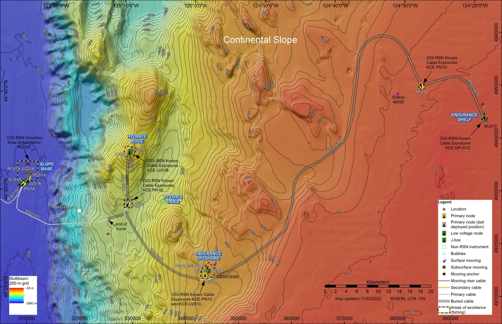

Additional sites along the cable spur lines will be documented here as the COSZO build-out progresses. The current Sites listing reflects the primary installation locations for the 2026 cruise.
COSZO instruments are installed at sites along the OOI Regional Cabled Array spanning the Cascadia margin. Each site has its own geological setting, instrument complement, and science role.
Shallow continental-shelf benthic site offshore Oregon (~80 m), in a highly productive coastal upwelling zone.
View site →Cabled COSZO node on the outer continental shelf (~110 m), hosting a seafloor geophysical sensor suite (node PN1D).
View site →Continental-slope benthic site off Oregon (~550 m), in the same dynamic coastal upwelling environment.
View site →Cabled COSZO node on the mid continental slope (~1,250 m), hosting a seafloor geophysical sensor suite (node PN1B).
View site →Accretionary wedge site near the deformation front. Methane hydrate system, shallow seismicity, and frontal thrust deformation.
View site →Deep-water site at the base of the continental slope, providing reference seismic and pressure observations seaward of the locked zone.
View site →
Slope Base Southern Hydrate Ridge Oregon Mid Slope Oregon Offshore Oregon Outer Shelf Oregon ShelfAdditional sites along the cable spur lines will be documented here as the COSZO build-out progresses. The current Sites listing reflects the primary installation locations for the 2026 cruise.